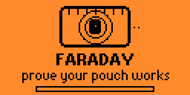
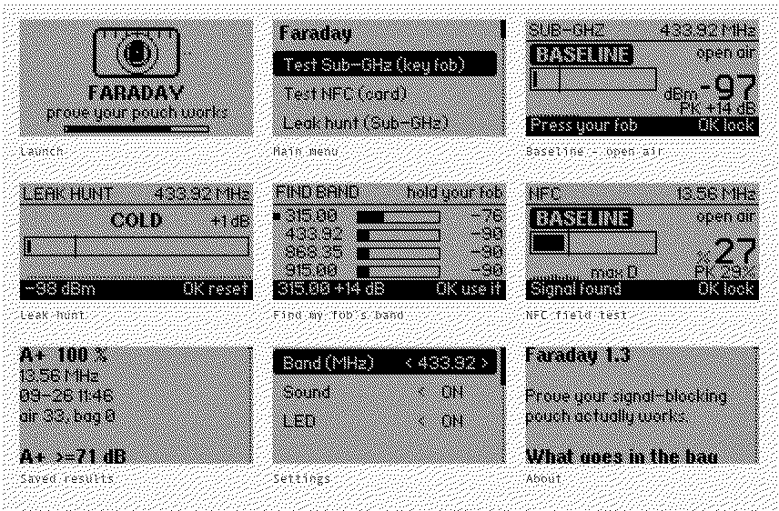
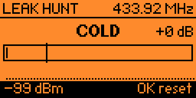

A signal-blocking pouch is a claim.
This is the measurement.
Faraday measures your key fob in the open air, measures it again sealed in the pouch, and tells you how many decibels the pouch actually took off — then grades it A+ to F. It uses only the hardware already inside a Flipper Zero, and it never transmits.


Every picture here was captured off a real device over USB. There is no mockup renderer in this project: a drawing of the UI is a second implementation that can disagree with the firmware while looking perfectly convincing.
Hold your fob next to the Flipper in the open air and press it. When a carrier rises clear of the noise, lock the reading.
Seal the same fob in the pouch, hold it in the same place, press it again.
The difference between the two readings is the attenuation, in dB, with a letter grade and a one-line verdict.
| Grade | Sub-GHz | NFC | |
|---|---|---|---|
| A+ | 60 dB+ | 98 %+ | Nothing gets through. |
| A | 45 dB+ | 90 %+ | Trust it in the field. |
| B | 30 dB+ | 75 %+ | Fine for everyday carry. |
| C | 20 dB+ | 50 %+ | Leaks a little. |
| D | 10 dB+ | 20 %+ | A determined reader wins. |
| F | under 10 dB | under 20 % | Not shielding at all. |
Sub-GHz is a real power measurement, so it is graded in decibels. NFC field-detect is a carrier-presence duty cycle, so it is graded as the percentage of the reader's field kept out — deliberately never called decibels.
These are the point of the app, not a disclaimer at the bottom of it.
A carrier has to rise at least 20 dB above the tracked noise floor before Faraday accepts a baseline, and it says so on screen when it refuses. That threshold is measured, not guessed: on a quiet 433.92 MHz channel with nothing transmitting, peak-hold reaches +13 dB within five seconds and +14 dB by ninety. At the 8 dB earlier versions required, a baseline made of pure noise sailed straight through.
A shielded reading can never sink below the noise floor, so the most attenuation a test can prove is the gap between your baseline and that floor. A weak baseline caps the result no matter how good the pouch is — so the baseline screen shows the best grade the setup can reach while moving the fob closer still helps.
Both rows are real readings off the same piece of copper cloth. Only the setup changed. A grade that hit the floor is captioned FLOOR, so it never reads as a verdict on the pouch.
If the shielded reading sinks into the noise floor, the true attenuation is somewhere past what was measured. Faraday prints >= 47 dB rather than pretending the floor is the signal.
A shielded reading that is not weaker than the open-air one is not zero attenuation — it is a measurement that did not work.
This compares two readings taken the same way. It is the right tool for "is this pouch doing anything, and is it better than that one", and the wrong tool for a specification.
Seal the fob, hold its button down, and sweep the Flipper along the seams, the zip, the fold and the corners. The meter, the warmer/colder word and the geiger clicks all peak over the spot the RF is escaping from — everything measured against the tracked noise floor, so it reads the same whether you are hunting a strong fob or a weak one.

A .fap bakes in its API version at compile time, and the loader refuses one that trails the firmware. Every release ships both.
| File | Firmware |
|---|---|
| faraday.fap | Official firmware |
| faraday-fw-dev.fap | Unleashed, RogueMaster, Momentum |
Drop it in SD Card/apps/Tools/ with qFlipper. If the launcher warns APP:87 < FW:88, you have the other one.
python3 -m pip install --upgrade ufbt ufbt update --channel=release # or dev ufbt # build ufbt launch # build, install and run over USB
The grading engine is pure C with no Flipper headers, so it unit-tests on the host with make -C test.